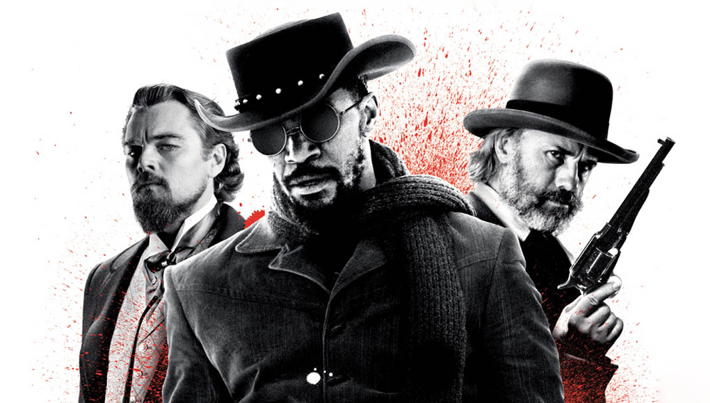
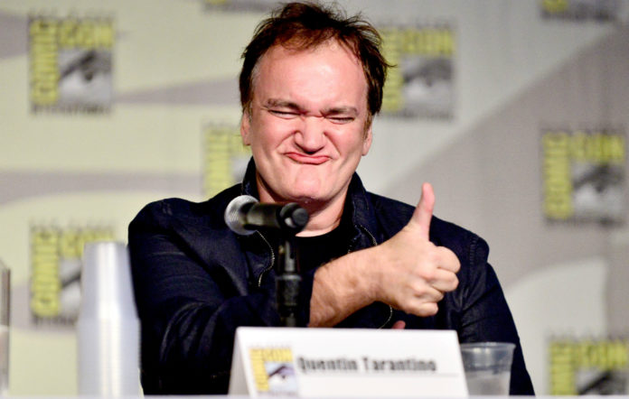

|  |
Quentin Jerome Tarantino Quentin Jerome Tarantino born March 27, 1963 (age 57) in Knoxville, Tennessee, U.S. He is an American film director, screenwriter, producer, and actor. In January of 1992, first-time writer-director Tarantino's Reservoir Dogs (1992) appeared at the Sundance Film Festival. The film garnered critical acclaim and the director became a legend immediately. Two years later, he followed up Dogs success with Pulp Fiction (1994) which premiered at the Cannes film festival, winning the coveted Palme D'Or Award. Since then, Tarantino has helmed several critically and financially successful films, including Jackie Brown (1997), Kill Bill: Vol. 1 (2003), Kill Bill: Vol. 2 (2004), Inglourious Basterds (2009), Django Unchained (2012), The Hateful Eight (2015) and Once Upon a Time in Hollywood (2019). |
Q. Tarantino started his career immediately with success. Empire magazine hailed Reservoir Dogs has the "Greatest Independent Film of All Time". His second film Pulp Fiction was nominated for seven awards at the 67th Academy Awards, including Best Picture, and won Best Original Screenplay; it earned Travolta, Jackson, and Thurman Academy Award nominations and boosted their careers. Its development, marketing, distribution, and profitability had a sweeping effect on independent cinema.
His movies are famous for their violence and bloodshed; their blaring soundtracks; their offbeat, Pinteresque dialogue; their startling performances from actors you had almost forgotten about. Q. Tarantino break all the rules, making movies that are simultaneously stylish, exciting and immortable.
Quentin Tarantino’s original goal in life was to become an actor, so he has a great respect for those who star in his films, and he thinks like an actor when he’s writing and directing. In a technique he’s dubbed “method writing,” Tarantino writes like an actor. This style results in characters that actors are dying to bring to life. That's why the best actors get immense satisfaction from working with him. Samuel L. Jackson, Uma Thurman, Brad Pitt, Leonardo DiCaprio, Tim Roth etc.